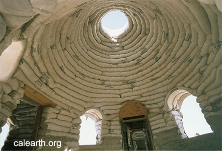
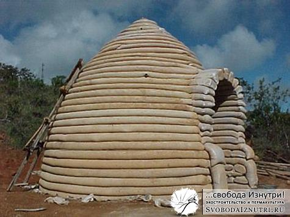

Зачем я закруглил свой дом?
Хоть технология строительства и была нам не до конца ясна, но мы знали наверняка, что:
-
дом будет круглым;
-
дом будет вкопан в холм и обвалован, будет зелёная кровля. Имеется ввиду не покрашенная в зелёный цвет, а с травой;
-
дом будет ориентирован по Солнцу и иметь только южные, юго-восточные и юго-западные окна;
-
отопление — печь, но предусмотреть возможность в будущем поставить солнечный водонагреватель и сделать тёплый пол;
-
дом должен быть инерционным
Сегодня расскажу почему круглый. На мой взгляд есть три причины выбора круглой формы дома: математическая, физическая и философско-психологическая.
Математика
Математика проста: круг имеет бОльшую площадь при меньшей длине стен.
Так, круг площадью 50 кв.м. (диаметром 8 метров) будет иметь длину окружности 25 метров. Сумма сторон прямоугольника площадью 50 кв.м. равна от 28 до 40 метров, в зависимости от длины сторон (чем ближе к квадрату, тем меньше цифра). Три метра стены — вроде бы и не такая большая разница. Ведь при толщине 50 см это полтора квадратных метра...
Но есть волшебное слово "строительный объём". Так что это не просто полтора квадратных метра. Это:
- 1-2 куба бетона на фундамент (1500-2500 рублей в зависимости от марки).
- 2-6 кубометра того, из чего строите. К примеру, в кубометре около 500 кирпичей, итого 1000-3000 кирпичей. Цена кирпича от 5 (хреновый б/ушный) до 50 рублей (крутой облицовочный). Таким образом, получим плюс 5-15 тысяч в первом случае и 50-150 тысяч во втором. Истина где-то посередине, скажем 10-50 тысяч плюса.
- 5-15 кв. метров утеплителя в зависимости от толщины его слоя.
- 3-9 кв. метра крыши, а это пиломатериал плюс покрывной материал.
- Не забываем про отделку.
- Не забываем про зарплату строителей. - Пренебрежём доставкой, хрен с ней. Итого при кирпичном доме имеем прибавку в 10 тысяч рублей по минимуму или около 30-50 тысяч если быть реалистом. Это помимо остальных трёх миллионов, которые тоже надо учитывать :)
Но у нас, слава Богу, эко-дом. И строим мы, слава Богу, сами. И для и без того уставшей спины эти три метра — это много, поверьте мне.
Итак, круглый дом будет иметь бОльшую площадь чем квадратный, т.е. мы экономим деньги, силы и время. Ещё отсутствие углов добавляет полезную площадь. И, кстати, прямоугольный дом если и начинает промерзать, то с углов, а это конденсат, плесень и разрушение конструкций заморозкой/разморозкой. Но это уже скорее физика.
Физика
Если вы были в пустом прямоугольном помещении, вы не могли не заметить то жуткое эхо, которое сопровождает любой звук. Теоретически я знал, но из практики точно убедился, что пустое круглое помещение с колонной посередине эха практически не имеет.
Объясню физику. Эхо в прямоугольном помещении — это примерно 50% первых отражений, 25% вторых и 25% всех остальных. Первое отражение — это когда я хлопнул в ладоши, этот звук долетел до стены, отразился и вернулся в моё ухо. Второе — когда перед залётом в ухо он отражается от ещё одной стены. Принцип, надеюсь, ясен.
При отражении звук часть своей энергии отдаёт стене. Чем больше раз отразился — тем больше энергии потерял — тем тише стал. Не буду вдаваться в детали типа количества децибел, квадраты расстояния и логарифмическую шкалу, упрощённо скажу так: наибольшее влияние на восприятие звука оказывают первые отражения засчёт своей громкости и немного вторые.
В круглом помещении большинство звуковых волн отражаются от стен в центр помещения. Они как бы концентрируются там. И если стоя в центре помещения хлопнуть в ладоши, то мы получим даже не 50, а все 60-70% первых отражений. Но! Вне центра количество первых отражений резко снижается. Если же в центре ещё и стоит колонна, то они снижаются до уровня процентов в 15-20.
Поэтому-то в храмах древности и было так много колонн. И на этом же принципе основаны циллиндрические отражатели/поглотители звука, устанавливаемые в некоторых мастеринговых студиях. Но это отдельная большая тема.
Ещё в физическом разделе стоит упомянуть про стоячие волны. Что это такое — коротко, ясно и с анимацией описано в соответствующей статье википедии.
Каким образом это всё касается нас, экостроителей? А таким, что любой объект (стены и помещения дома в том числе) — объёмный резонатор, имеющий свою резонансную частоту и первые, вторые и все остальные гармоники, составляюще амплитудно-частотную характеристику...
Короче, ребята, это жёсткая физика. Чтобы не лопнул мозг, просто расскажу выводы. Если правильно подобрать частоту — можно звуком определённой частоты и огромной амплитуды (громкости) заставить лопнуть не только мозг и череп, но и тельце их носителя. Но если громкость будет совсем небольшая — то мозг и тельце будут просто испытывать нагрузки, и будут тратить энергию на их компенсацию. И поэтому проживут меньший срок и с меньшей радостью от жизни. Так что постараться минимизировать стоячие волны — задача актуальная.
Вы наверняка слышали про «золотое сечение». Хоть и звучит круто и эзотерично, но это просто цифра такого соотношения размеров, при которых соотносимые объекты обладают наименьшей кратностью друг другу. Для нас это значит минимум стоячих и обычных звуковых волн. «Золотых» соотношений науке известно два. Есть мнение, что их больше.
И есть мнение, что наши предки были умнее и знали не два, а больше. Свидетельством тому то, что при проектировании помещений по всей Евразии пользовались т.н. «саженями» — системой мер (3 группы по 7, всего 21 штука), минимизирующих кратность сторон помещения друг другу. Причём не только по ширине и длине, но и по высоте. Как вам, а? ГОСТ у них там что ли был соответствующий...
Но самое весёлое то, что при проектировании круглых (точнее, циллиндрических) помещений сажени не использовались при условии нахождения печи в центре помещения. Внезапно, не правла ли?! А учитывая, что печь логичнее ставить в центре (тогда прогрев равномерней и топлива уйдёт меньше), и она была там в 99% случаев, то можно сказать, что саженями при проектировании круглых домов не пользовались.
Вывод напрашивается сам собой: в круглых помещениях с крупногабаритным объектом в центре стоячих волн не возникает, либо их амплитуда низка настолько, что ими можно пренебречь. При проектировании я понимал, что изучение строительства по саженям — очень полезное дело. Но если быть честным, мне просто было лень, и я думал о круглом доме :)
Также в физическом разделе стоит сказать о том, что круг - геометрическая форма, равномерно распределяющая усилия. Если проще, то круглый дом прочнее прямоугольного. «Треугольник самая прочная геометрическая фигура!» — скажут скептики и будут правы. Но это на плоскости. И вчитайтесь внимательней: равномерное распределение усилий. Посмотрите на фото куполов из суперсамана:


Ответьте на вопрос: если сделать из этих сарделек трёхгранную пирамиду, будет ли она надёжно стоять?
А если в грань этой пирамиды въедет гружёный камаз?
В качестве курьёза приведу случай, вычитанный на каком-то строительном форуме:
В неоштукатуренную стену круглого дома из мешков въехал гружёный то ли ГАЗ, то ли ЗИЛ (точно не помню). Въехал не быстро, просто гружёный не успел затормозить вовремя. Результат: машине потребовался ремонт, дому нет. Даже ни один мешок не порвался.
Такая вот занимательная физика.
Философия и психология
Мне кажется, все читающие уже и так подали заявление на вступление в Секту любителей круга (ну или хотя бы Секту ненавистников квадрата). Но всё же раскрою ещё один аспект. Хоть и могу, но на этот раз не буду тыкать носом в ссылки на заумные статьи зарубежных академиков. Просто поразмышляю вслух. Точнее, втекст. :)
Как говорит очень уважаемый мной ректор СПбГАУ Ефимов Виктор Алексеевич, в современном обществе в какую отрасль жизни ни ткнись — везде клиника. И это не шутка, он приводит очень серьёзные примеры. Вот и в строительстве жилых помещений клиника.
Почему мы живём в прямоугольных помещениях? Потому что нам в них тепло, светло и мухи не кусают? Хрен там: потому что так проще (читай — технологичнее, быстрее и дешевле) построить. И потом проще посчитать. И написать что-то маркетологическое, очень круто звучащее, но имеющее по сути простой смысл: «продаётся однушка, 36 кв. м.».
А как померять круглое помещение? Ну, во-первых, надо найти центр, что само по себе нетривиальная задача. Во-вторых, надо ходить по кругу и мерять радиус в разных местах. А если он разный? Это я всё из опыта, ребята. Я вот не знаю сколько у меня дом. Хоть знаю, что около 40, но от этого не легче, ведь на самом деле это от 35 до 42...
Да уж, живём в коробках. А ведь ни одно живое существо на нашей планете не строит себе коробок. Все сооружения братьев наших меньших так или иначе стремятся к кругу: птичьи гнёзда, бобровые хатки, мышиные норы, муравейники... Думаю, что это неспроста. Природа не так глупа. Была бы глупа, не было бы жизни на нашем голубом шарике.
Но большинство этот факт не тревожит, и большинство живёт проживает в коробках.
Утверждается, что люди в каменном веке были глупые и жили в пещерах, а теперь — всеобщий прогресс, благоденствие и высшее образование. Но как посмотришь на памятники архитектуры — создаётся впечатление, что всё с точностью до наоборот: раньше только сажени (только хардкор!), рядом огород, вокруг природа. А ныне — железобетонные пещеры, расположенные в местах локального экологического бедствия.
Почему бедствия? Потому что много мусора зрительного, звукового, электромагнитного, растворённого в воздухе, воде и физического, тоннами вывозимого чтобы сжечь тут же, неподалёку.
Блин, что-то я расфилософствовался. Я же о круглом доме!
Короче, из опыта скажу, что визуально круглое помещение кажется бОльшим чем такое же прямоугольное. Ещё изнутри оно кажется больше чем снаружи.
Завершу цитатой из одной умной книжки.
«...жизнь общества либо опирается на объективные закономерности, либо противоречит им, вследствие чего общество терпит разного рода неурядицы: внутрисоциальные конфликты, рост статистики заболеваемости, экологические и экономические бедствия и т.п.»
Всё, думаю что хватит на сегодня. В следующий раз прочитаете почему я закопал свой дом.
Не забываем оставлять комментарии.
Комментарии
Иван
Большое спасибо вам! Очень интересная статья. Скажите, а как вам пяти(шести)гранные здания? что нибудь можете рассказать о них? Ведь у пчёл к примеру соты тоже пятигранные. видимо не спроста...
Свобода Изнутри
Иван, спасибо. Про пяти/шести/N-гранные здания как-то даже не задумывался. Минус круглого дома - нетехнологичность. В этом смысле он сильно проигрывает квадратному. Шестигранный дом может быть чем-то посередине. С одной стороны, не круг. С другой, не квадрат. И рассчитать материал на перекрытие/крышу проще. Но в любом случае если буду строить дом сейчас, то он точно будет квадратным. Просто потому что на порядок быстрее и проще. Почитайте продолжение нашей истории, особенно про перекрытие и крышу.